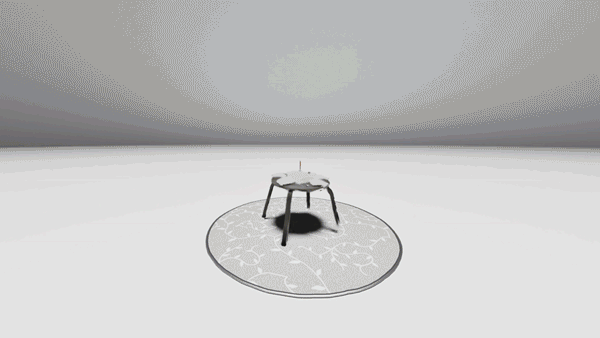
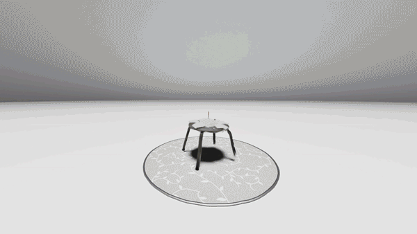

Into Birth | 2024
Immersive web-based game
Individual memory of
a birthday with families
🧠
If memory is not
entirely real,
can we experience
how it appears
in our mind?"

When scenes from memory emerge in the mind, they are not entirely “realistic” or “fictional”, but rather in a “surreal” boundary blurred by the interplay of consciousness and time-lapsing. As technology of 3D scanning enables us to faithfully record and represent the objective history, is that possible to visualize a piece of personal memory as the subjective experience?
Into Birth began with a piece of scanning in a private birthday celebration with families. By combining photorealistic Gaussian Splatting into game engine, it recreates the personal history as it exists poetically in the subjective memory, inviting both acquaintances and strangers to get immersived into the happiness and nostagia behind the scene.
Director:
Xinran Wu
Environment Artist:
Xinran Wu
Front-end Programmer:
Xinran Wu
Special Thanks to:
Batliner Curime,
Joo Eric,
Haochen Xu
Click on
this link
or scan the QR code
to dive
Into Birth
 

3D Scanning:
LumaAI
Panorama Scene:
Unreal Enging 5
Post Production:
Davinci Resolve
Web Code:
THREE.js,
javascript,
html, css
Surreal Represent of Memory
Formed in Neural Mechanism
of Human Brain

"Recent progess on the functional organization of cortex",
source:MIT OpenCourseWare, The Human Brain, Spring 2019, Lecture 21 "Brain
Networks",
https://ocw.mit.edu/courses/9-13-the-human-brain-spring-2019/2834298deaafc9665b8c969d956bdca6_MIT9_13S19_L21.pdf

"fMRI image when responding to human faces and objects",
source:Haxby JV, Gobbini MI, Furey ML, Ishai A, Schouten JL, Pietrini P.
Distributed and overlapping representations of faces and objects in ventral temporal
cortex. Science. 2001 Sep 28;293(5539):2425-30. doi: 10.1126/science.1063736. PMID:
11577229.
In the field of neuroscience, over the past half-century, significant breakthroughs have been made in understanding the “biological mechanisms of memory”.
Perceptions of current situation are mapped into mental representations through the visual system and other sensory modalities, transmitted and stored between neuronal cells. As time passing by, the formation of new synaptic structures assist to turn short-term memory into long-term memory, drifting from the prefrontal cortex to the hippocampus and other cortical regions.
ಸನಸನಸ ಸನಸನಸ

Storyboard draft for walking into a piece of surreal memory

Environment variation through the timeline
The scenes in memory are not alway, or always not, faithful to the reality. On one hand, when visual perceptions—composed from the fragmented information of numerous visual cells—is processed in the brain, elements such as human and environment are analyzed in varying levels by different brain regions. On the other hand, our attention would act as a filter, subjectively focusing on certain aspects of the objective world and enhancing the resolution of specific information. Furthermore, the emotions, triggered by the event, may also influence the formation and transmission of various microchemical substances between neural cells, eventually affecting both the content and persistence of the memory.
ಸನಸನಸ ಸನಸನಸ

Spatial relationship between realistic scene and surreal environment
Thus, when we try to recall a specific moment from the past, the scenes that emerge in our minds fascinatedly differ from the realitic history: emotions, attentions, and contents are reassembled subjectively, creating a dreamlike memory reproduction that, though originating from reality, appears in a surreal form.
Increasing Accessiblity and Authenticity
in 3D Scanning Technology
for Reality Representations


Reconstruction process of 3D model from 2D image
with photogrammetry (top), NeRF(middle) and Gaussian Splatting (bottom),
source:https://www.geodetic.com/basics-of-photogrammetry/
https://github.com/bmild/nerf
https://repo-sam.inria.fr/fungraph/3d-gaussian-splatting/
The development of 3D scanning technology, from photogrammetry to recent Gaussian Splatting, has evolved from only accessible with professional scanning equipment to common devices like cameras and smartphones, also achieved in faster calculating speed and higher precision.
ಸನಸನಸ ಸನಸನಸ


left: "On-site recording of the original scene"
right:"Gaussian Splatting 3D reconstruction from the original video"
Surreal environment build-up and particles VFX in Unreal Engine
This improvement of speed and accessiblity us to capture any random moment into high-quality 3D scenes without intrusion on the events' authenticity, offering great potential for memory recording.
When combining real-world 3D scanning with virtual environments in game engines, this hybird technical method allow us not only represent the memories in the realistic way, but also reconstruct them in a “surreal state”, aligning with the level of individual perceptions. We could now visualize the invisible scene generated in neural activities, and more thrillingly, enable the shared revisiting of those memories between physical objectivity and emotional subjectivity.